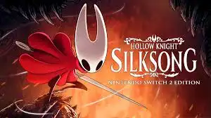

Juegos Destacados

Hollow Knight: Silksong
Secuela del metroidvania premiado, donde el jugador encarna a Hornet en un reino lleno de desafíos y belleza oscura.

Minecraft
Un sandbox de bloques sin límites, donde la creatividad es tu única regla. Construye, explora y sobrevive.
The Legend of Zelda: Ocarina of Time
Un clásico atemporal de Nintendo que marcó la historia de los videojuegos con su épica historia y exploración 3D.